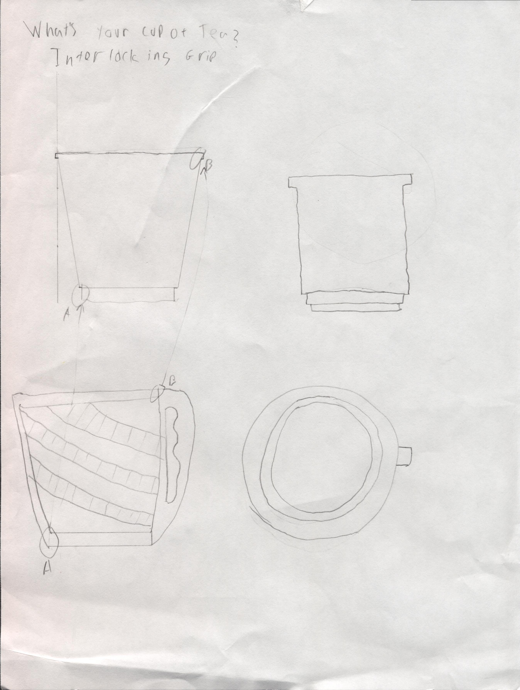
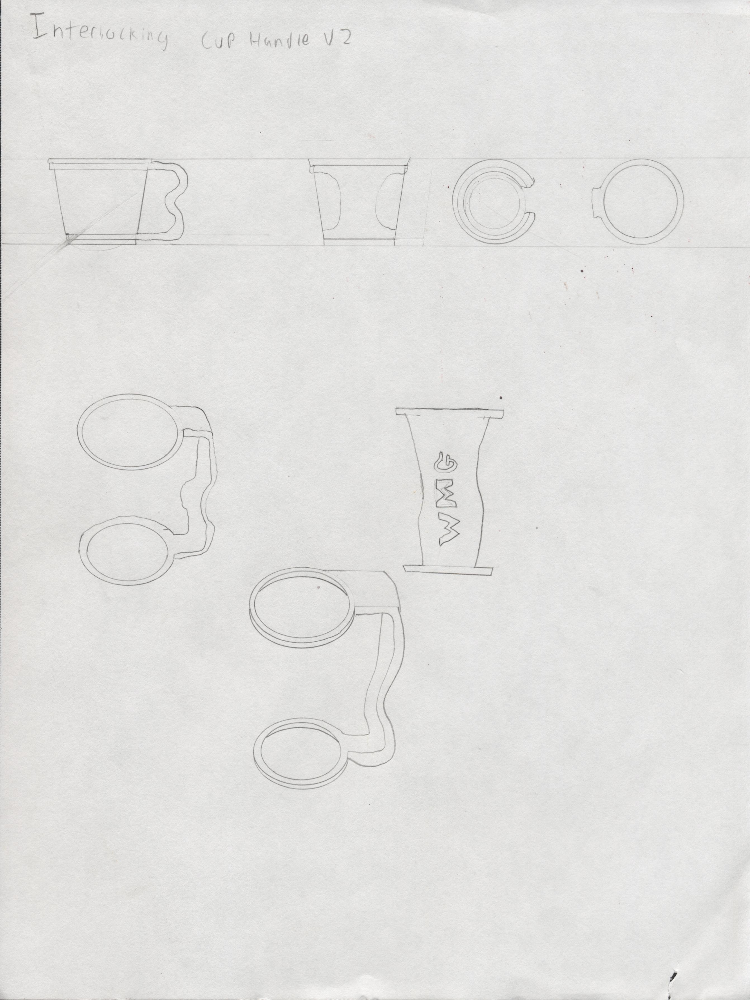

This project was an exploratory design excercise in problem idenfication, sketching, and prototyping. To accomplish this, I made a number of iterative sketches and prototypes, using laser cutters and heat guns to cut and thermoform acryllic.
As someone who is prone to dropping things, I felt that building a handle for my morning coffee and tea would be ideal and useful. The original idea was for the the top ring of this holder to interlock with the top ring of a paper cup, while the bottom peace with feature a circular divot that the bottom of the cup would rest in. A handle would be joined to the main body, cut in with divots for added grip support.
 After lingering on the initial prototype, I decided to make a few changes to the design. Rather than the holder being a hot drink holder, I specifically design it with cold drinks in mind. I also simplified the design, allowing me to use a single peice of acryllic to make it. In the first step in prototyping this, I made a series of test rings to ensure a snug fit around the cup. I then lasercut the full peice with the best fitting ring lengths, and heatformed the peice to give a curved structural grip.
A realization came to me soon after building the first prototype: I rarely, if ever use disposoable cups anymore. I received a reusable Yeti bottle over the summer and have been attempting to use it as often as possible. However, it is quite a large bottle, and I often find myself dropping it, and it is beggining to get scuffed and dented. Seeing as I would like the bottle to last as long as possible, I decided to pivot in this project and make a stein/mug style sleeve for my yeti. The initial stages of prototyping this iteration involved taking various measurements of the bottle, attempting to get the snuggest possible sleeve width by making a series of octagon shaped bases. After finding the ideal width, I made a stack of bases out of wood, bonded them to each other, and thermoformed the wall of the sleeve around it. The sleeve uses a basic joinery technique, in that the edges are all slotted, allowing protrusions slot into the formed sleeve. The peice was joined using acryllic cement.
I found thermoforming very fickle to deal with. Sometimes it worked perfectly, othertimes, in the case of the sleeve, it ended up contracting a good deal, which resulted in the bottle being unable to fit inside the sleeve. If I were to redesign the sleeve, I would have probably used a different engraving pattern (which resulted in arguable structural weaknesses), as well as making the sleeve a bit looser and employing some sort of press and twist lock mechanism that interacts with the bottles notch, to ensure the bottle stays in place.